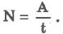
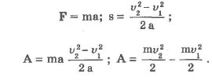

Термин "работа" в механике имеет два смысла: работа как процесс, при котором сила перемещает тело, действуя под углом, отличном от 90°; работа - физическая величина, равная произведению силы, перемещения и косинуса угла между направлением действия силы и перемещением:
Работа равна нулю, когда тело движется по инерции (F = 0), когда нет перемещения (s = 0) или когда угол между перемещением и силой равен 90° (cos а = 0). Единицей работы в СИ служит джоуль (Дж).

1 джоуль - это такая работа, которая совершается силой 1 Н при перемещении тела на 1 м по линии действия силы. Для определения быстроты совершения работы вводят величину "мощность".
ОЕдиницей мощности в СИ служит 1 ватт (Вт). 1 Вт - мощность, при которой совершается работа в 1 Дж за 1 секунду.
Рассмотрим действие на тело некоторой постоянной силы F. На участке пути s будет произведена работа А. В результате у тела изменится скорость:
